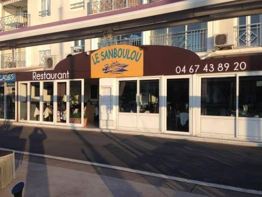

Produits de la mer
Poissons, loup de mer et fruits de mer dans l'esprit de la cuisine méditerranéenne.
MÈZE · ÉTANG DE THAU
Restaurant traditionnel français & méditerranéen
Bienvenue au Sanboulou, restaurant traditionnel français et méditerranéen situé sur le port de Mèze.
Installez-vous et profitez d'une cuisine inspirée des produits de la mer et du terroir, dans un cadre convivial au bord de l'étang de Thau.

Poissons, fruits de mer, viandes et cuisine française traditionnelle.
Poissons, loup de mer et fruits de mer dans l'esprit de la cuisine méditerranéenne.
Une cuisine traditionnelle et généreuse, pensée pour un repas convivial.
Profitez d'un emplacement sur le port de Mèze, avec une terrasse tournée vers l'étang de Thau.
Extraits d'avis publiés sur Google Maps, noms abrégés. Retrouvez tous les avis sur la fiche Google du restaurant.
Très belle adresse sur le port ! Les huîtres sont tout simplement exceptionnelles et le service est chaleureux et attentionné. Je recommande sans hésiter !
Nous avons passé un excellent moment dans ce restaurant ! La nourriture était vraiment délicieuse et très bien présentée. […] Un grand merci à notre serveuse, qui était très sympathique, souriante et attentionnée. L’endroit est également très accueillant pour les chiens […].
Nous avons passé un excellent moment au Sanboulou. Les tapas de la mer en entrée étaient savoureux et copieux, ensuite le thon était cuit parfaitement et bien accompagné. L'ambiance est sympa, le cadre agréable avec une vue sur le port. […]
C'est tout à fait par hasard que nous nous sommes arrêtés au Sanboulou. Nous en sommes ravis ! Nous étions bien installés à l'ombre, le long du quai. […] Un régal ! A cela s'ajoute un excellent service ni trop lent ni trop rapide.
UNE TABLE ?